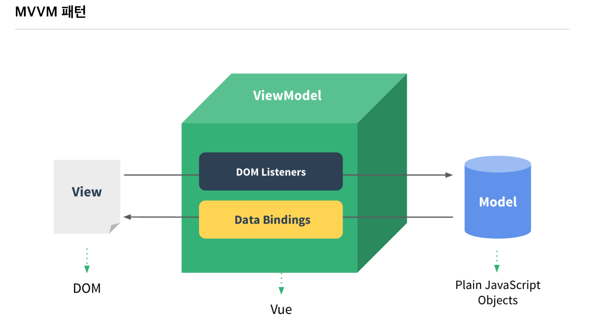
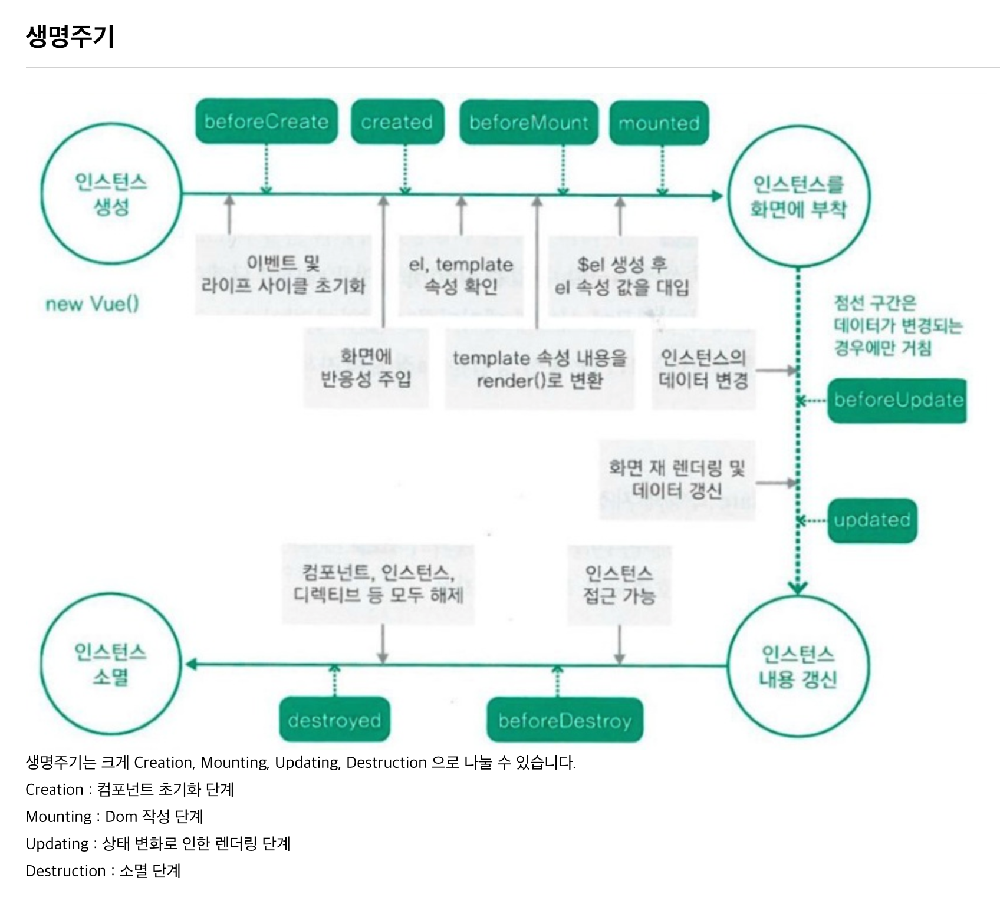
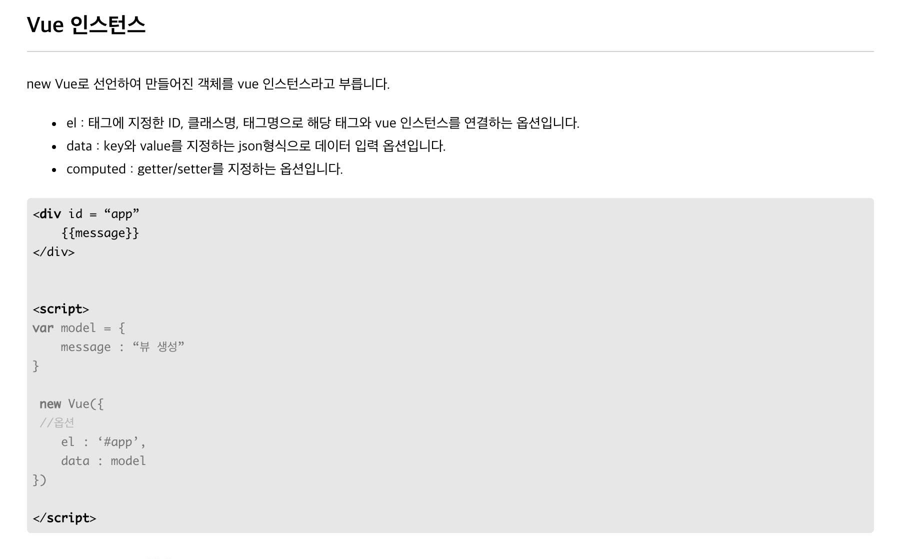

Vue 개발 참조
1. 소개
Evan You가 만들었으며, 2014년 릴리즈를 시작으로 꾸준히 발전하고 있는 자바스크립트 프레임워크입니다.
컨트롤러 대신 뷰 모델을 가지는 MVVM(Model-View-ViewModel) 패턴을 기반으로 디자인되었으며,
재사용이 가능한 UI들을 묶어서 사용할 수 있습니다.
2. 호환성
IE8 이하 버전을 지원하지 않습니다. Vue는 기본적으로 JavaScript 객체를 Vue 인스턴스 data 옵션으로 정의할 때 모든 속성들을 Object.defineProperty을 사용하여 Getter/Setter로 변환합니다.
이것은 ES5에서 새로 등장한 기능으로 하위호환이 불가능하기 때문에 Vue.js는 IE8 이하를 지원하지 않습니다.
3. MVVM 패턴

4. 가상돔
5. 컴포넌트

6. 생명주기

7. Vue 인스턴스

8. mkdocs 생성 및 실행
- mkdocs 생성
$ cd ~/workspace/frontend-demo
$ mkdocs new mkdocs
- mkdocs 실행
$ cd ~/workspace/frontend-demo/mkdocs
$ mkdocs serve
- mkdocs 빌드
$ cd ~/workspace/frontend-demo/mkdocs
$ mkdocs build
- mkdocs deploy
$ cd ~/workspace/frontend-demo/mkdocs
$ mkdocs gh-deploy